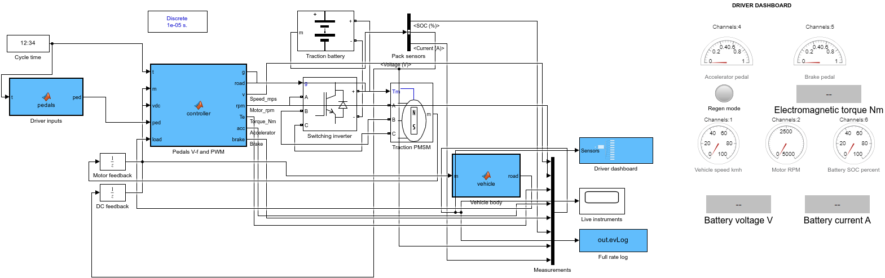
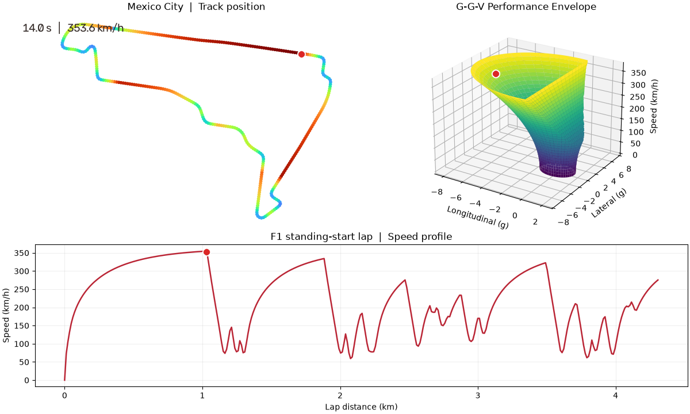

K&C-Based Vehicle Dynamics & Steering-Feel Simulation
Integrated vehicle-motion and steering-feedback simulation connecting suspension lookup maps, nonlinear tire forces, rack loads, and driver torque.
Description
Developed a configurable MATLAB/Simulink plant with Simscape steering dynamics. Suspension jounce and rack travel index steer and camber maps, while lateral tire loads introduce compliance steer. Torsion-bar flexibility, rack inertia, friction, and tire aligning moments build the steering feedback loop. The commissioning maps are synthetic and prepared for replacement with measured K&C data.
Key Results
- Linked chassis motion, four vertical wheel motions, and four wheel-speed states to a compliant steering system.
- Animated a 20-second handwheel sweep through ±500° with independent front-wheel steering and a stationary body.
- Implemented a measured-maneuver correlation workflow reporting RMSE, bias, and peak error for response and steering channels.
Simulation Results
Front-wheel steering animation, projected left/right rack loads, driver-torque hysteresis, and vehicle-response traces.
Tools Used
Comparative Ride Dynamics of Passive, Active & Frequency-Selective Suspension
Controlled comparison of three quarter-car architectures over one continuous sequence of ramps, potholes, and bumps.
Description
Built parallel two-degree-of-freedom suspension models using a 300 kg sprung mass and 40 kg unsprung mass. The active system adds a force-limited PID actuator. A DAVINCI-inspired passive model uses a viscous path and Maxwell branch to investigate frequency-selective damping. Its parameters are illustrative and require measured production data for vehicle-specific conclusions.
Key Results
- Evaluated all three systems over the same 100 m road at 10 m/s using a 1 ms integration step.
- Active control reduced body-displacement RMS by 80.1% and unweighted body-acceleration RMS by 24.8% relative to the passive baseline.
- The frequency-selective proxy reduced displacement RMS by 0.34% while acceleration RMS increased by 19.3%, exposing the trade-off for this tuning and road.
Simulation Results
Synchronized three-system animation with springs, dampers, actuator-force arrows, body-motion histories, and a full-run metrics comparison.
Tools Used
EV Regenerative Braking & Switching Powertrain Simulation
Battery-to-wheel simulation of bidirectional power flow through a PWM inverter, PMSM, and longitudinal vehicle model.
Description
Built a 360 V, 40 Ah battery system with a six-switch IGBT bridge, 1 kHz PWM, rotor-synchronous voltage control, and an 8:1 drivetrain. Accelerator and brake inputs drive the 30-second cycle. Logged battery voltage, current, SOC, shaft power, and vehicle speed support energy accounting and regenerative-operation checks.
Key Results
- Calculated 36.32 Wh net terminal energy consumption and 39.01 Wh returned charging energy over the complete cycle.
- Detected regenerative operation during 98.7% of the evaluated braking windows using negative averaged battery and shaft power.
- Cross-checked SOC by current integration with a 0.0323 percentage-point difference from the simulated battery SOC.
Simulation Results
Driver dashboard, switching powertrain diagram, six-channel response plots, and logged charge/energy results.

Tools Used
Multi-Sensor ADAS Scenario & Adaptive Following Simulation
Scenario-based perception testing combining camera, radar, lidar, and ultrasonic outputs with ego-vehicle following control.
Description
Created a curved-road encounter with a slower delivery truck, an overtaking car, and adjacent traffic. Radar tracks feed a range-based longitudinal controller, and ultrasonic clearance can request extra slowing. Camera detections, lane boundaries, and lidar samples support inspection of the scene. Steering follows the known road centerline.
Key Results
- Simulated an ego vehicle starting at 14 m/s behind a truck traveling at 7 m/s.
- Updated and logged ego pose, speed, lead range, sensor counts, and side clearance at 0.1-second intervals.
- Visualized nominal sensor coverage together with synthetic measurements and a recorded-trajectory 3D replay.
Simulation Results
Bird’s-eye sensor coverage, ego-centric scene, Unreal Engine replay, and perception time histories.
Tools Used
Predictive Overtaking & Lane-Return Control in Mixed Traffic
Receding-horizon vehicle control that slows behind a lead car, assesses oncoming traffic, executes a pass, and returns to its lane.
Description
Combined a maneuver supervisor with a sampled predictive controller using nonlinear lateral tire forces. Candidate lane targets and acceleration commands are evaluated against traffic clearance, road boundaries, and lateral-acceleration limits. Traffic positions and speeds are known simulation inputs, enabling a direct study of vehicle response and passing decisions.
Key Results
- Compared identical control logic with 1, 2, and 4 other vehicles.
- In the four-vehicle run, slowed from 36 to 7.6 km/h, initiated the pass at 11.1 s, and began the return at 20.3 s.
- Returned to the original lane by 24 s at 36 km/h, with peak front-wheel steering of 7.73° and approximately 1.76 m minimum modeled clearance.
Simulation Results
Chase-view animation, bird’s-eye traffic map, maneuver-state display, and steering/speed comparisons across traffic counts.


Tools Used
G-G-V Performance Mapping & Circuit Speed-Profile Analysis
From tire-force limits to circuit performance through acceleration envelopes, cornering-speed limits, and iterative forward/backward sweeps.
Description
Built a two-axle, load-sensitive tire model for quasi-steady flying-lap analysis. Longitudinal load transfer, brake bias, rear-wheel propulsion, power, and drag shape the acceleration envelope. Cornering limits initialize the speed profile, followed by acceleration and braking sweeps. A companion F1 visualization uses the separately optimized F1 lap and its aero-dependent envelope.
Key Results
- The 1,250 kg, 200 kW example completed the Mexico City centerline in 143.86 s with speeds of 44.0-224.3 km/h.
- The Silverstone example completed its flying lap in 167.69 s with speeds of 59.5-208.1 km/h.
- The companion F1 standing-start model reached 354.8 km/h at 1.03 km and completed Mexico City in 86.70 s.
Simulation Results
Animated track position, purple-to-yellow G-G-V surface, full speed profile, and a moving acceleration marker. The final F1 MP4 was rendered in Python from MATLAB results.

Tools Used
Wheel-Fastener Preload & Self-Loosening Simulation
End-to-end simulation of the fastener holding a high-performance wheel to its hub: clamp-force & friction modelling, preload-scatter analysis, and transverse-vibration self-loosening (Junker mechanism).
Description
A simulation study built around the single quantity that governs joint safety - the clamp force (preload). The work first models how tightening torque converts into clamp force using the VDI 2230 torque-tension framework, decomposing the torque into its thread-friction, under-head-friction, and bolt-stretch components, then runs a Monte-Carlo study to quantify how real friction variation propagates into preload uncertainty. It then models how that preload is lost in service: a reduced-order (1-DOF) simulation of the Junker self-loosening mechanism, where transverse vibration shears the joint and unwinds the nut. Deliverables include preload-scatter plots, clamp-force decay curves, a loosening-threshold map, and an animation of the simulated preload loss.
Key Results
- Nominal preload 71.6 kN on an M14 wheel bolt at 160 N·m (bolt stress 575 MPa); nut factor K = 0.16, compared with a published lubricated-steel range
- Torque decomposition: only ~11% of applied torque stretches the bolt - ~40% lost to thread friction, ~49% under the bolt head
- Friction variation alone drives ~11% scatter in achieved preload (60.5-86.4 kN, 5th-95th percentile); doubling thread friction collapses preload by −29%
- Self-loosening shows a sharp threshold at 0.10 mm transverse amplitude - below it no preload loss occurs within the modeled conditions; above it the model predicts exponential preload decay
- Quantified loosening rate: 0.18 mm amplitude → 50% preload loss in ~347 cycles; 0.35 mm → ~111 cycles, illustrating the assumed Junker self-loosening mechanism
Simulation Results
Tools Used
Rotary Eddy Current Brake - Feasibility & Performance Analysis
Multi-physics simulation: electromagnetic torque modelling (Python), structural FEM, and thermal CFD.
Description
Feasibility study of contactless, wear-free ECB braking technology addressing EU non-exhaust emission regulations. Three-pillar simulation: electromagnetic modelling (Python / Wouterse 1991), structural FEM (ANSYS Mechanical), and thermal CFD (ANSYS Steady-State Thermal).
Key Results
- Electromagnetic model: Peak torque 410 N·m at 641 RPM · Al 6061 · B₀ = 0.8 T · COMSOL 2D axisymmetric FEM study
- B² torque scaling confirmed - doubling B-field quadruples peak torque
- Structural FEM: Von Mises = 4.11 MPa · Deformation = 0.0021 mm · Safety factor = 45.8 at 3000 RPM
- Thermal CFD: Ventilated disc 120°C cooler than plain disc (85.1°C vs 205.8°C · 10,000 W/m²)
- Investigated the effect of ventilation channels on ECB thermal management
Simulation Results
Project outputs are summarized above. Available demonstrations are linked below.
Tools Used
Frontal Impact Test Simulation - 2012 Toyota Camry
US NCAP 56 km/h frontal rigid wall crash test using the CCSA/FHWA FE model (2.25M elements) in Ansys LS-Dyna.
Description
Full-car frontal crash simulation based on US NCAP 56 km/h rigid wall impact using the CCSA/FHWA 2012 Toyota Camry FE model. Post-processing performed in LS-PrePost v4.12.6 with CFC60 filter per SAE J211.
Key Results
- Impact velocity: 56 km/h (US NCAP standard)
- FE model: 2.25M elements, CCSA/FHWA Toyota Camry
- Time step: 7x10^-7 s | Mass scaling: 0.33%
- Von Mises Stress Max: 261.8 MPa
- Max Wall Force: 1,150 kN at 30 ms
- Hourglass energy: less than 1% - energy check passed
Simulation Results
Project outputs are summarized above. Available demonstrations are linked below.
Tools Used
Vehicle Lateral Dynamics Modeling & Analysis
2-DOF linear bicycle model in MATLAB using state-space formulation to analyze handling characteristics, stability, and tire behavior across operating conditions.
Description
Developed a 2-DOF linear bicycle model for vehicle lateral dynamics, implementing state-space formulation to analyze handling characteristics across operating conditions.
Key Results
- Derived bicycle model state-space matrices capturing lateral velocity and yaw rate dynamics
- Characterized understeer/oversteer behavior via understeer gradient (K_us) across front/rear cornering stiffness configurations
- Conducted frequency response, step steer, and sinusoidal sweep analyses
- Implemented Pacejka Magic Formula tire model
- Simulated ISO-inspired lane change maneuver
Simulation Results
Tools Used
NVH Structural Analysis: GT-R Inspired Car Body
Full 3-phase NVH simulation: Modal Analysis, Harmonic Response & FRF extraction using ANSYS Mechanical 2025 R2.
Description
Performed an Automotive Harmonic Response Analysis on a Nissan GT-R body model using ANSYS Mechanical to study structural vibration behavior under dynamic loading conditions. The project included modal analysis, harmonic excitation setup, and Frequency Response Function (FRF) evaluation to identify resonance frequencies and analyze vibration characteristics relevant to automotive NVH performance.
Key Results
- Modal Analysis: 12 natural frequencies computed (0-58 Hz) · Modes 1-6 rigid body (free-free boundary conditions)
- Mode 7: Body lateral bending at 12.37 Hz - most critical NVH mode
- Mode 9: First torsion at 29.90 Hz - primary structural stiffness indicator
- Harmonic Response: 500 N engine excitation swept 20-100 Hz · Resonance peaks at 29 Hz and 38 Hz
- 180° phase shift at resonance confirmed · Log-scale Bode plot (SAE/OEM standard format)
FRF Plot - Harmonic Response

Modal Shape Animations
Click any mode to watch the animated deformation shape.
Simulation Results
Project outputs are summarized above. Available demonstrations are linked below.
Tools Used
Path Planning & Optimised Racing Line - Suzuka F1 Circuit
Two-phase autonomous racing simulation using real F1 track boundary data from TU Munich.
Description
Two-lap autonomous racing pipeline on the Suzuka Circuit. Lap 1 maps the track blindly using local sensor data. Lap 2 races an optimised minimum-curvature line computed via gradient descent.
Key Results
- Sensor radius: 34 m for boundary cone detection
- Track resampling: 500 points
- Optimiser: 300 gradient descent iterations, early stop at dk less than 1x10^-7
- Safety inset: 1.5 m from track walls
Simulation Results
Project outputs are summarized above. Available demonstrations are linked below.
Tools Used
PRM Path Planning & Autonomous Vehicle Tracking
End-to-end motion planning and car control pipeline designed from scratch in Python. The PRM algorithm creates a safe path based on the creation of a KD-Tree graph and a Dijkstra search. The path is then followed by a kinematic bicycle with a Pure Pursuit controller.
Description
End-to-end motion planning and car control pipeline designed from scratch in Python. The PRM algorithm creates a safe path based on the creation of a KD-Tree graph and a Dijkstra search. The path is then followed by a kinematic bicycle with a Pure Pursuit controller.
Key Results
- 800 collision-free nodes · ~5900 roadmap edges · Dijkstra shortest path query
- Kinematic bicycle model - x, y, yaw state propagation at each timestep
- Index-based Pure Pursuit lateral controller with adaptive cornering speed
- Animated GIF outputs - planning pipeline + vehicle tracking
Simulation Results